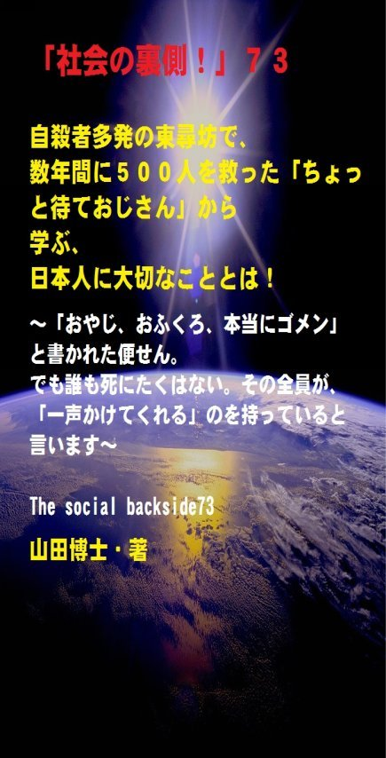

| 「社会の裏側！」７３......自殺者多発の東尋坊で、数年間に５００人を救った「ちょっと待ておじさん」から学ぶ、日本人に大切なこととは！: 「おやじ、おふくろ、本当にゴメン」と書かれた便せん。でも誰も死にたくはない。その全員が、「一声かけてくれる」のを持っていると言います | |
| 山田博士 | |
| kominitesyuppankai (2017) | |

■「社会の裏側！」７３
自殺者多発の東尋坊で、数年間に５００人を救った「ちょっと待ておじさん」から学ぶ、日本人に大切なこととは！
～「おやじ、おふくろ、本当にゴメン」と書かれた便せん。でも誰も死にたくはない。その全員が、「一声かけてくれる」のを持っていると言います～
The social backside73
山田博士・著
★本書の著作権について
皆さんにはまったく関係ないことだと思いますが、複写、転送、抜粋、転載など、著作権侵害にあたる行為は絶対になさらないで下さい。本書の著作権は、山田博士にあります。今後、皆さんのお役に立ちたい活動が出来なくなりますので、その点、ぜひよろしくお願いします。ささささ、それでは、本書をどうぞ、ごゆっくりご覧下さい。
★概要
皆さん、東尋坊（とうじんぼう）って、ご存じ？
東尋坊とは、日本海の荒波によって海岸の岩肌が削られ、高さ約２５メートルにもわたる岩壁が続くという、世にも珍しい場所なんですね（福井県坂井市）。
この岩は「輝石安山岩（きせきあんざんがん）」と呼ばれるものですが、これほどの規模を持つ場所は世界に３カ所ほどしかないとされているほど。
そのため、国の天然記念物及び名勝に指定されています。
でも、世界にも例の少ないそんな名勝地だからこその、大きな悩みが、地元の人たちにはあるようなんです。
それは......。
そう、それはなんと、「全国から自殺志願者が集まってくる」ということ。
少し以前のことになりますが、ある３０代の男性は、クリスマスイブの１２月２４日、この東尋坊に、千葉県から鈍行電車を乗り継いでやって来ました。
彼は、その２週間ほど前に、勤務先から突然「派遣切り」を告げられたと言うんですね。
まあ、詳しいことは、本書で述べておきましたので、ご覧になっていただければと思うのですが、こんな若いかたが、絶望するような社会って、いったい何のでしょうか。
ぼくたちは、あの大戦で、廃墟となった国土を汗水流して再興してきました。
その結果、はたしてみんなの顔に笑顔が映っているのでしょうか。
この東尋坊で、そのような自殺志願者５００名ものいのちを救った一人の男性がいると聞き、ぼくはいてもたってもいられなくなりました。
彼のことを、「ちょっと待ておじさん」と、呼ぶんだそうですよ。
本書では、彼の話やいまの日本の置かれた状況などを述べております。そして、今後、ぼくたちはどうすればいいのか。
日本の未来を少しでも明るくするために、ぜひご覧いただければと思います。
あ、ちなみに、ぼくも彼と同郷の福井県人です(笑)。
ぜんぜん、関係ないですよね。
ささささ、どうぞ。
★目次
★（第１章）
全国から、東尋坊に自殺志願者が集まってくるのですが、少し以前のこと。ある３０代の男性は、クリスマスイブの１２月２４日、この東尋坊に、千葉県から鈍行電車を乗り継いでやって来ました。彼は勤め先で「派遣切り」にあい......
★（第２章）
「カミハテ商店」という映画の監督と、茂さんとの対談。そこで、彼の思いが赤裸々に語られております。彼は言います。「あるときなど、東尋坊の崖の近くの暗闇で、初老の男女が二人座って泣いているんです。私がそばに行き、大丈夫だ、私にまかせなさい」と。しかし彼らを行政に任せたら悲しいことが......
★（第３章）
資本主義の社会では、企業や組織は、そこで働く個々人のことなど、考えちゃいません。ただ、自分の組織が存在すればいい。個々人など、「替わり」はいっぱいいるのですから。だから、自分で動き、周囲の人全体で大きな組織に立ち向かう。そうしなければ......
★「社会の裏側！」シリーズの既刊本案内
★プロフィール
（最初に、恥ずかしながら、ぼくの紹介を簡単に述べておきます）
やまだ・ひろし。
１９４７年、福井県小浜（おばま）市生まれ。
食生態学者。元大学名誉教授。日本危機管理学会会員。
山田博士いのち研究所主宰。
ベトナム戦争の終わったちょうどその年１９７５年に、マンガストーリィと商品の実名で食べものや環境を取り上げた小冊子「暮しの赤信号」を発行する。実名で取り上げたため、社会に衝撃を与えた。各号１０万部単位で読まれ、隠れたベストセラーなどと、新聞などで何度も報道される。
同じ年、偶然にも有吉佐和子さんの「複合汚染」が発表され、この小冊子はその動きも受けて多くの学校の副読本でも活用された。
文化放送の「なっちゃこワイド」や、ＮＨＫ海外放送「ある日本人」でお話しをしたり、ギター弾き語り公演や、各自治体や学校などへの講演なども続けている。
現在は、メルマガ「暮しの赤信号」（「短縮版」と「完全版」の２種）を発行し、企業名や商品名などを公表して、世界中のかたに喜ばれている。
その読者層は、医師や看護師、栄養士、教師、会社経営者、自治体など、国の内外を問わず、多くの読者たちから毎日のように便りが届いている。年齢層も、１０代から８０代まで、さまざまだ。
また、ほぼ毎月第３土曜日に、東京の恵比寿でお茶飲み会「博々亭（ひろびろてい）」を開催。遠路から毎回読者が駆けて来ている。参加条件はメルマガ読者に限定だが、参加費用は無料だ。
このメルマガは、まぐまぐ！を始め３つのスタンドの合計で、数千部発行しているが、もしご関心のあるかたは、ご覧いただくと嬉しい。読者登録をされれば、毎回、無料でお手元に届く。月～水は本誌が、木～日は『３分で分かる！今週のワンショット「暮しの赤信号」』が、それぞれ早朝５時に届けられる。その時刻を楽しみにしている読者も多いとか。
短縮版メルマガ「暮しの赤信号」は無料。
下記で登録されれば、毎回、自動的に配信される。
「短縮版」（無料です）→ http://goo.gl/AFx95J
著書に 『脱コンビニ食！』（平凡社新書）
『危険な食品』（宝島社新書）
『その食品はホンモノですか？』（三才ブックス）
『ひとり月１万円食費で幸せ生活』（ＷＡＶＥ出版）
『最新 危ないコンビニ食』（現代書館）
『あぶないコンビニ食』（三一新書）
『続 あぶないコンビニ食』（同）
『外食店健康度ランキング』（同）
『山田博士の暮しの赤信号』第１巻～第５巻（亜紀書房）
『暮しの赤信号』小冊子＆ＣＤ－ＲＯＭ版全２３巻
『月１万少々の食費で、ザクザクと健康を稼ぐぼくの方法』
『いのち運転"即実践"マニュアル』各話
『山田流・時事呆談』各話
『セーラー服と警察犬』（小説）各巻......などがある。
山田のホームページ http://yamadainochi.com/
★はじめに......
こんにちは。
山田博士（やまだ・ひろし）です。
本書をご覧いただき、嬉しく思っております。
この内容をご覧いただくことで、少しでもあなたが「社会の裏側！」の流れにお気づきになり、そしてたとえ１ミリでもいい、即、行動されることを願っております。
ただ読むだけでは、誰でもできます。
それでは、あなたの身の回りの状況は石のように動きません。
本書をご覧になって、これは......と思うことがあれば、即行動なさって下さい。
お願いします。
その小さな行動の積み重ねこそが、あなたの明日を、１２色のバラ色で輝かせることになると信じております。
なお、この「社会の裏側！」は、今後もシリーズとして発刊して行くつもりです。
もしご関心があれば、「社会の裏側！」という名前で、アマゾンで検索してお調べ下さい。
さまざまな問題の社会の裏側！を詳しく、しかも楽しく述べております。
ぼくの名前で検索されても、見つかるのではないかと思います。
もし、「ＰＤＦ版」でご希望の場合は、ぼくの事務局まで遠慮なくお問い合わせ下さい。事務局→ http://goo.gl/t12Yx
ささささ、能書きはそこまでにします。
どうぞ、笑顔で、頁をお繰（く）り下さい。
お楽しみに！
山田博士
★（第１章）
全国から、東尋坊に自殺志願者が集まってくるのですが、少し以前のこと。ある３０代の男性は、クリスマスイブの１２月２４日、この東尋坊に、千葉県から鈍行電車を乗り継いでやって来ました。彼は勤め先で「派遣切り」にあい......
日本海を見下ろし、朝日や夕陽の美しい、絶景なる崖（がけ）の上の近くで、お茶屋を営んでいる男性がいます。
彼の名前は、茂（しげ）幸雄さん。
大根おろしをお餅（もち）に付けて食べる「おろし餅屋」というお茶屋さんを運営しているんですね。
彼がこの数年間で、自殺志願者５００名ものいのちを救ったと聞き、ぼくはいてもたってもいられなくなりました。
彼のことを、「ちょっと待ておじさん」と、呼ぶんだそうですよ(笑)。
しかも、彼は、ぼくと同郷なんですね。
そう、あの、素敵な福井県です（えっと......何か言いましたか）。
まあ、ぼくの生まれた場所は小浜（おばま）市ですから、彼の住んでいる東尋坊（とうじんぼう）とはかなり離れてはおります。ぼくは西端の京都府との県境近く、彼は東端の石川県との県境近く。
でも、それだけ離れていても、同じ「福井」という名前だけで、なんとなく同郷人として心が通じ合うような気がするのは、なぜなのでしょうね。
その東尋坊は、日本海の荒波によって海岸の岩肌が削られ、高さ約２５メートルにもわたる岩壁が続くという、世にも珍しい場所なんですね（福井県坂井市）。
この岩は「輝石安山岩（きせきあんざんがん）」と呼ばれるものですが、これほどの規模を持つ場所は世界に３カ所ほどしかないとされているほど。
そのため、国の天然記念物及び名勝に指定されています。
でも、世界にも例の少ないそんな名勝地だからこその、大きな悩みが、地元の人たちにはあるんですね。
それは、「全国から自殺志願者が集まってくる」ということ。
少し以前のことになりますが、ある３０代の男性は、クリスマスイブの１２月２４日、この東尋坊に、千葉県から鈍行電車を乗り継いでやって来ました（出所：「朝日新聞」２００８年１２月２５日、電子版）
彼は、その２週間ほど前に、勤務先から突然「派遣切り」を告げられたと言います。
そして、彼の懐（ふところ）には、両親にあてた遺書がありました。
でも、そのとき、地元のＮＰＯに保護されたんですね。
そのＮＰＯというのが、冒頭で揚げた茂さんが代表を務める組織だったんです。
「大丈夫や。世話してやるから安心しなさい。死んだらあかん！」。
叱りとも思えるその茂さんの一言で、そのＮＰＯの相談所で彼は泣き崩れたと言うんですね。
その千葉県からやって来た彼は、その５年ほど前に弟が事故死したと言います。
自分の給料から、残された弟の妻と子どもに毎月１５万円を仕送りしてきたのですが、生活の蓄（たくわ）えは全くできず、ネットカフェで暮らすようになりました。
ところが、今度はそのカフェで財布を盗まれて、支払いができず、無銭飲食で警察に突き出された。
そのときは、父親に代金を立て替えてもらったようです。
ちょうどそのときと同じころ、彼の親友が、自分同様に派遣契約を打ち切られたんですね。
その親友と突然に連絡が取れなくなったため、親友の実家に電話をしたら、「死んだ」と......。
その理由を聞くと、遺族は電話口で泣き出したと言います。
親友を失った彼の心に、ぽっかりと大きな穴が開いてしまいました。
これは、誰にでも起こりえることなんですが、誰も彼の心の内を見てはくれなかったようです。
悩んだ彼は、就職についても、地元の市役所などに相談したようですが、「本気で仕事を探しているのか」などと軽くあしらわれたと言うんですね。
もう後がない。
誰も親身に話を聞いてくれない......。
ぼくにも、彼の心がよく分かります。
いまの時代、昔のような大家族制ではありませんから、みんなが核家族の中で孤立しているわけですね。
これは、独身者、既婚者関係なく、そうです。
かえって既婚者のほうが、責任が重くて耐えられない。
そして、彼は、東尋坊への長い列車の移動中に、遺書を書きました。
その遺書の用紙も、「履歴書の裏の白紙」だったと言います。
その裏に彼は、こう書きました（本文のママ）。
「おやじ、おふくろ、本当にゴメン。
最後の最後までめいわくをかけるけど、これが本当に最後だから。いろいろやってみたし、仕事もさがしたけど何をやってもうまくいかなかった。
これ以上は無理......」
茂さんは言います。
「誰も死にたくはないんです。誰かが●●くれるのを待っているんですよ」（●●は下記の設問を）。
そのような茂さんの行動を見て、いま、世界各国から、映画にしたいなどの取材が来ていると言います。
いったい、彼はどのような思いで、いまのような行動をしていらっしゃるのでしょうか。
そして、「５００名のいのち」を救った茂さんとは、いったいどういう人物なのか。
茂さんの行動をヒントにして、ある映画を作成した映画監督との対談の動画を見つけましたので、その中から、彼の言葉を、いくつか拾ってみました。
どうぞ、皆さんも、参考にしてみて下さい。
そして、そこから、ぼくたちは何ができるのか。
多くの人のために、あなたが何をできるのか。
いっしょに、考えてみたいと思っております。
★（第２章）
「カミハテ商店」という映画の監督と、茂さんとの対談。そこで、彼の思いが赤裸々に語られております。彼は言います。「あるときなど、東尋坊の崖の近くの暗闇で、初老の男女が二人座って泣いているんです。私がそばに行き、大丈夫だ、私にまかせなさい」と。しかし彼らを行政に任せたら悲しいことが......
「カミハテ商店」という映画（主演・高橋惠子）があります。
茂さんの行為をヒントにして同様の映画を作った映画監督と、茂さんとの対談。
それ を YouTub e で見つけましたので、見てみました。
約１時間ほどの長さですが、渋谷のある小さなシネマでの対談のようで、後ろに白いスクリーンが貼られていて、強いライトが天井から照らしていました。
その会場へ、茂さんが拍手とともに現れます。
そして、その映画監督の山本さんという若い男性と対談を始めるわけですね。
下記はその映画の公開時（２０１２年）ですので、現在から見た数字とは少し異なっております。
茂さんは、元警察官なのですが、２００４年、警察ＯＢや元教諭らと、ＮＰＯ法人「心に響く文集・編集局」を立ち上げました。
そして、自殺志願者の相談所を東尋坊内の空き家に開設したんですね。
その後、冒頭で述べたように、これまでに５００人を超える自殺志願者を保護してきたわけです。
この対談で、茂さんは言います。
「２００４年からいままでに、４００人ほど（当時の時点で）食い止めました......」
「北海道から南から、日本全国から自殺志願者が東尋坊にやってくるわけです......」
「私が警察を定年になる前、毎日のように警察に自殺保護者がくるわけですね。彼らの話を聞くと、誰も死にたくないんです......」
「あるときなど、東尋坊の崖の近くの暗闇で、初老の男女が二人座って泣いているんです。私がそばに行き、大丈夫だ、私にまかせなさいと言って引き戻してくるのですが、行政に引き継いだら、電話が来て、今日、裏山で二人とも死んでしまったと......」
「それを聞いて私は怒ってね。バカモン。お前たちはいったい何をしているのかと......」
「警察では彼らは犯罪者じゃないから、２４時間以内に、家族か福祉課に引きつがなくてはならないんです。ところが行政に任せると、いま述べたように、そのまま自殺してしまうわけですね。こりゃ何とかしないといかんと......」
「誰も死にたくないんです。ただ声を掛けてほしいだけ......」
「私がそばに行ったときも、誰もすぐに飛び込んだりはしません。バスを降りてここまで歩いてきて、しばらく待っているんですね。多くの人は、午後の２時か３時ごろにここに来て、ジッと待っているんです。自分の心と話しているわけですね。そして実際に飛び込むのは午後の８時から９時ぐらいが多い。そのころは、もうあたりは真っ暗です。そのときまで、誰かが声をかけてくれるのを......待っているんです......」
「私はね、彼らの調子を狂わせるようにしているんですよ。だって、みんな自殺するまで心を集中していますからね。そのときに、私がまったく調子を狂わせるような言葉をかけたり行動をすると、多くの人はハッと現実に戻るんですね......」
「鬱（うつ）になっているときに、精神科なんかへ行っても、治りません。行けば行くほど、薬の数が多くなり、最後は廃人のようになってしまう。そして自殺へとし向けるわけです。だから、その予防をすべきなんですね。その原因を取り除くことをしなければ......」
「たとえば、大企業に入っても、上司からパワハラ（山田注：職場などで、地位や人間関係で弱い立場の部下に対して、精神的または身体的な苦痛を与えること）などで圧力を加えられ、どこにも行き場がなくなり、自殺へと......」
「だから、そういう問題をすべて取り除いてあげることが、一番の解決法なんですね。私たちには、弁護士や教師などいろいろな人がいるので、その会社を訪れて会社に解決策を要求したりします。ある企業など、課長と部長が土下座して謝りましたよ......」
「生活苦が原因であれば、いっしょに行政に行き、生活保護などの申請をします。それだけで......」
「また家庭内の問題であれば、いっしょに家庭に入り、あんた、何を言っているんだと。そんな１０年も昔のことをいつまでそんなにいびっているんだと。もっといいところを見るようにしなさいと。そうすれば、みんな元気になるんです......」
「みんな、プライドや世間体があり、何も話せないんです。多くの人は３つのこと。愚痴を聞いてほしい。頼れる人がほしい。支えてくれる人がほしい。これらさえあれば、誰も自殺に走りません......」
ぼくは、茂さんのこのようなお話しを聞きながら、不覚にも、目玉に水が滲（にじ）んでしまいました。
どこからか、雨漏りがしたみたい。
自分とはまったく見知らぬ人を、そうしてまで救えるこの思いは、いったいどこから来ているのか。
東尋坊の崖の上で、二人して泣いている夫婦に、あなた、手を差し伸べることができますか。
その場で、実際に、できますか。
ぼくにはできない。
よほど、自分が強くなければ......。
でも、もしぼくなら、本当に死にものぐるいで、その活動をするのかもしれませんね。
もちろん、とても茂さんのような能力はありませんけど。
★（第３章）
資本主義の社会では、企業や組織は、そこで働く個々人のことなど、考えちゃいません。ただ、自分の組織が存在すればいい。個々人など、「替わり」はいっぱいいるのですから。だから、自分で動き、周囲の人全体で大きな組織に立ち向かう。そうしなければ......
でも、こういう具体的なお話しを聞くのは、本当に辛（つら）いものがあります。
だけど、これらを知らないでノホホンと生きて行くのは、もっと辛い。
いまは、そう思っています。
先ほど、茂さんが、その「予防と対策」を考えなくては、何も進まないと、おっしゃっていました。
これって、どの問題にも当てはまりますよね。
たとえば、茂さんもおっしゃっていたように、その人が鬱病になって精神科へ行ったとしても、医師にはその人を治すことはできない。
これは、いままでのぼくの体験からも分かります。
対症療法では、一時的には良くなるのかもしれませんが、川上を改善しなければ、川下は絶対に解決しません。
何度も再発します。
いつもぼくがこの「時事呆談」で述べている食べものなどに関しても、まさしくそうなんですね。
いくら自分だけが高価で健康に良い食べものを手に入れたとしても、そんなもの、何になりますか。
日本の農業が、もう消滅寸前なのに、農業、そして農民がいなくなれば、アッという間に、有機野菜など消えてしまいます。
どれだけあなたが求めようにも、海外から輸入した農産物を求めるしかなくなってしまいます。
だから、ＴＰＰなどの動向にいつも留意をして、日本全体の農業をどうするのか。
どなたも、真剣に考えるべきなんですね。
そして、自分だけじゃなく、日本人そのものの未来をどうすればいいのか。
いやいや、世界の人々の未来をどうすればいいのか。
そのようなことをいつも頭に入れながら、これから暮らす必要があるのじゃありませんか。
今回ここで述べた自殺問題の原因は、個々人にあるようですが、じつは社会全体の歪（ゆが）みから出て来ていることが多い。
派遣労働なんていうものが、ごく当たり前のような顔をして社会に浸透し、ブラック企業というものの存在も、いまは珍しくもなくなり、母子家庭の母親の働く場所が少なくなり、子どもの貧困率は先進国の中では最高だというニッポン。
年金の保険料を同じように長く払っても、公務員と民間との間ではその格差がいよいよ激しい。
なぜ、同じ年齢なのに、老後にこうした格差があるのですか。
老後に、借金を抱えながら苦しい暮らしを送っている大勢の人たち。これらの現実は、けっして国会議員や閣僚たちには見えないでしょう。
確かに、日本以外の国と比べれば、まだまだマシだと言えることは多いのかもしれませんが、格差が広がって来ていることは間違いありません。
それらは、毎日のように起こっているさまざまな事件を見ていると、本当によく分かります。
そして、いまの若者たちが、自分の老後をどうするのか。
年金も少なく、いやいや年金さえもらえず、働く力もない老後に、彼らは、いったいどう生きて行くのか。
そうなったとき初めて、いまここでぼくが述べていることに思い当たるのじゃありませんか。
なにしろ、１年間で３万人も自殺者がいるなんて、ほかの先進国では考えられません。
日本の自殺者は、アメリカの２倍です。
そして、イギリスやイタリアの３倍だと言います。
しかも、これらの自殺者の周囲には、この数倍もの「自殺者予備軍」たちが存在するはずです。
それを考えれば、どうして、「先進国と言われるこの日本だけ」がこんな事態にあるのか。
それらを解決せずに、日本の明るい未来は絶対にやってきません。
だって、いつ、あなたやぼくや身近の人たちが、同様の行動に走ることになるか分かりませんからね。
たとえ、皆さんや子どもたちが大企業や役所に就職できたとしても、先述したようなパワハラがあったりします。
上司の理不尽な行為に、ジッと耐えなければならない。
そうしたとき、自分だけの問題とせずに、全体の問題として全員で解決に向くようにすべきなんですね。
ブラック企業に働いていて、みずからいのちを断つ若者たちも、自分一人だけで解決しようと思うから壁にぶつかるわけですね。
企業相手に、自分一人で立ち向かっても、そんなもん、焼け石に水です(笑)。
だけど、いまの企業経営者も従業員も、両方が社会科学を学んでいない。
そのため、みんながみんな、まるで学校の延長のように企業を考えているのじゃありませんか。
誰かが助けに来てくれる。
教師が助けてくれる。
どこにいますか、そんな人......(笑)。
資本主義の社会では、企業や組織は、そこで働く個々人のことなど、考えちゃいません。
ただ、自分の組織が存在すればいい。
個々人など、「替わり」はいっぱいいるのですから。
だから、自分で動き、周囲の人全体で大きな組織に立ち向かう。
そのような必要性を、ぜひ、この「時事呆談」で学んで下さい。
ぼくも、若いころは企業で働いていましたから、そのあたり、痛感しています。
そうすれば、あなたも茂さんのような強い思いを持つことができるはず。
そして、隣で悩んでいる人を見つければ、すぐに「一声かける」ようにして下さい。
すぐに......が大切です。
あとで......じゃダメ。
その「一声かける」ことが、一番の解決方法なんですね。
少しでもその人の身近にいてあげること。
いいじゃありませんか
おせっかいだと思われても......。
あなたのその行為のために、一人のいのちが救われれば......。
コホン、見て下さい。
ぼくは昔から、本当の「おせっかい屋さん」で通ってきました。
なにしろ、自分の食べているものが美味（おい）しければ、前で食べている妻にも、「これ美味しいよお、ほらほらほら......」なんて言いながら、目の前にヌッと突き出してしまうわけですね。
そのため、いつも妻から悲鳴とともに、睨（にら）まれております。
せっかく美味しいものを食べてほしい......というぼくの願いなのに、なぜ......伝わらないのでしょうか。
ひょっとしてこれは、先ほど述べた「一声かける」こととは、少し意味が異なっているのかもしれませんなあ。
ハハハ......。それじゃまた次回ね。ご機嫌よう。（山田博士）
▼設問です▼
設問→ 上記の文章を読み、下記の●●にあてはまるものを、選択語句から選んでみよ。ただし２文字とは限らない。
「誰も死にたくはないんです。誰かが●●くれるのを待っているんですよ」
【選択語句→ 手を引いて、声をかけて、足をひっかけて】
■答え■
下記のとおりです。でも、先に答えを見てはいけません。
本文を再度ご覧になり、十分想像してから答えをご覧下さい。
きっとその繰り返しが、あなたの明日を輝かせることになると思っています。
答え→ 声をかけて
（了）
★
（最後にひとこと）
ここまでお読みになって下さり、ありがとうございました。
ここで述べているような内容の最新情報を、メルマガ「暮しの赤信号」では述べております。
企業名や商品名も公表していますので、もしご関心のあるかたは、下記から登録されれば、毎回、自動的にお送りします。
「短縮版」は無料です。
毎回、早朝５時に、あなたのところへ配信します。
現在、全世界で数千部を配信しておりますが、楽しい文体が人気のようですよ。早朝５時をお待ちになっているかたも......。
その日から役立つ内容です。
「短縮版」（無料です）→ http://goo.gl/AFx95J
メルマガ上で、また、お逢いしましょう！
＝＝＝＝＝＝＝＝＝＝＝＝＝＝＝＝＝＝＝＝＝＝＝＝＝＝＝＝＝＝＝
★「社会の裏側！」シリーズの既刊本案内★
（山田博士・著）
「電子版」と「ＰＤＦ版」があります。お好みのほうで、どうぞ。
～これだけたくさん、マスコミも言わない内容が、存在します！
ご関心のあるものから、ご覧ください～
＝＝＝＝＝＝＝＝＝＝＝＝＝＝＝＝＝＝＝＝＝＝＝＝＝＝＝＝＝＝＝
★「電子版」の場合は、各巻にリンクがありますが、もしない場合 は、アマゾンで検索なさってください。レートにもよりますが、どれも５８５円前後。
★「ＰＤＦ版」の場合は、下記の事務局までご連絡ください。
（「ＰＤＦ版」は１０００円前後ですが、数が多くなれば、かなりの割引をしていますので、冊数などをご連絡下さい。直接ご連絡いただいた場合は、１０冊以上の場合だと、１冊が３５０円ほどになります。ただ、なるべく「電子版」のほうをご利用下さい）
事務局→ http://goo.gl/t12Yx
【１】社会の裏側！ １......子宮頸ガンワクチンで女子中高生が泣いている！
→ https://goo.gl/BMwQTm
【２】社会の裏側！ ２......ペットボトルを「ペット」にしてはいけない。新生児の男女比が驚くことになっている！
→ https://goo.gl/QuFsYz
【３】社会の裏側！ ３......牛丼店「すき家」が、従業員を貧困のどん底に！
→ https://goo.gl/YrmzNf
【４】社会の裏側！ ４......小学校の低学年児に「向精神薬」を処方する医師たち！
→ https://goo.gl/L97NJu
【５】社会の裏側！ ５......映画「世界が食べられなくなる日」。原子力、「遺組み」の現実！
→ https://goo.gl/7HwZ38
【６】社会の裏側！ ６......蚊帳（かや）に練り込まれた「毒物」ってご存じでした？
→ https://goo.gl/dMa52s
【７】社会の裏側！ ７......あなたは、放射性物質が濃縮された「エコセメント」で住宅を建てますか？
→ https://goo.gl/UbkdH4
【８】社会の裏側！ ８......いまや加工食品の甘味のほとんどは「異性化糖」だ！遺伝子組み換えコーンによるこの甘味料が日本人を壊す
→ https://goo.gl/6FNSeG
【９】社会の裏側！ ９......ＬＥＤ照明の「人体実験国」ニッポン！
【１０】社会の裏側！ １０......コーラの着色料に「発ガン性」の疑惑が出た！
【１１】社会の裏側！ １１......「香料」のせいで死ぬ思いの人たちへ！日本人の母乳や脂肪から初めて検出された「人工のムスク」
【１２】社会の裏側！ １２......子どもの「健康格差」が凄まじい！なんと「就学援助」の小中学生が１４２万人になった
【１３】社会の裏側！ １３......ＴＰＰと私設法廷。じつはこの「ＩＳＤ条項」こそが日本乗っ取りの要だった！
【１４】社会の裏側！ １４......築地市場移転の本当の狙い！この裏に、電通と日本ＴＶ、そしてＧＳ社が蠢いていた！
【１５】社会の裏側！ １５......ミツバチたちが消えたら、人間は「４年も」生きられない！
【１６】社会の裏側！ １６......偽装食品がなぜ広がるのか！阪急阪神ホテルズのニセ食材事件なんて、氷山の一角に過ぎない
【１７】社会の裏側！ １７......過去最大の「米偽装事件」。それは米離れの若者が原因だった！
【１８】社会の裏側！ １８......総合ビタミン剤などのサプリメントは、ガンや心疾患のリスクを高める！
【１９】社会の裏側！ １９......海に漂うプラスチック破片には、人類が過去生産してきた多くの有害化学物質、とくに「ＰＯＰｓ」が含まれていた！
【２０】社会の裏側！ ２０......高血圧症患者が、「人為的に量産」されている！
【２１】社会の裏側！ ２１......子どもの貧困は、「日本の未来」を左右する！
【２２】社会の裏側！ ２２......サプリメントのほとんどが、中国産になっていた！
【２３】社会の裏側！ ２３......食品の「製造所固有記号」の秘密。あなたにこの記号が読めるか！
【２４】社会の裏側！ ２４......ドライバーの「生活習慣病」と人身事故との関係！
【２５】社会の裏側！ ２５......武田薬品工業のニセ高血圧治療薬「ブロプレス」問題は、何を物語っているのか。その衝撃的背景！
【２６】社会の裏側！ ２６......砂糖は「炭酸飲料１缶でアウト」というＷＨＯ指針の理由とは！
【２７】社会の裏側！ ２７......なんと「発達障害児」の急増に、「農薬」が関係していた！
【２８】社会の裏側！ ２８......田中正造「真の文明は、山を荒らさず、川を荒らさず、村を破らず、人を殺さざるべし！」
【２９】社会の裏側！ ２９......治験。ネットの求人欄で、「とくに日本人」を募集するアメリカでの実態！
【３０】社会の裏側！ ３０......「味噌」が、放射性物質を除去するこの実験。世界の人に知らせたい！
【３１】社会の裏側！ ３１......「夢のリニア新幹線計画」が、日本人を壊（こわ）す４大理由！
【３２】社会の裏側！ ３２......「食べもの戦争」は、異常気候の変動でこう勃発する！
【３３】社会の裏側！ ３３......「ＳＴＡＰ細胞」大騒動と、理研コンツェルンのねらいとは！
【３４】社会の裏側！ ３４......遺伝子組み換えの「不妊サケ」が、食卓に並ぶ日が来た！
【３５】社会の裏側！ ３５......カネボウ美白化粧品や、ＤＨＣ社「ディープクレンジングオイル」にみる「医薬部外品」の陰謀とは！
【３６】社会の裏側！ ３６......食べものに「放射線」を照射すると、その食品自体から放射線が出る危険性が分かった！
【３７】社会の裏側！ ３７......原発汚染時代の、ニッポンの「魚」の食べかた！
【３８】社会の裏側！ ３８......じつは「家族農業」が、日本の飢餓リスクを救う！
【３９】社会の裏側！ ３９......遺伝子組み換え「ご飯」が、もうまもなくあなたの食卓に！
【４０】社会の裏側！ ４０......「女性の目線」に立った原発レポート！
【４１】社会の裏側！ ４１......糖尿病予備軍の人が、「熱中症」で亡くなるこの衝撃理由！
【４２】社会の裏側！ ４２......子どもの好きな食品に、これだけも遺伝子組み換え作物が使われていた。実名リスト付き！
【４３】社会の裏側！ ４３......自閉症などの発達障害は、遺伝じゃなく、農薬などの「環ホル」が原因であることが分かった！
【４４】「社会の裏側！」４４......ファッション企業の「ファーフリー」（毛皮は扱わない）の動きが広まったが、中国ではアンゴラウサギたちが今日も生きたまま！
【４５】「社会の裏側！」４５......広く使われている「人工甘味料」が、実際には、糖尿病のリスクを逆に高めていた。その衝撃的な事 実とは！
【４６】「社会の裏側！」４６......ミツバチが消えた。じつは、あなたがシックハウスや居間の殺虫剤で倒れる原因も、これと同じだった！
【４７】「社会の裏側！」４７......愛するペットに「ペットフード」を与えてはいけない！
【４８】「社会の裏側！」４８......学校給食の栄養士が「本当は」使いたくない中国食材とは！
【４９】「社会の裏側！」４９......なぜ、「栄養ドリンク剤」を未成年に禁止している国があるのか！
【５０】「社会の裏側！」５０......あなた、「老人難民」になりますか。それとも死にますか？
【５１】「社会の裏側！」５１......甘味料「Ｓｐｌｅｎｄａ」でダイエット中のかた、ご愁傷さまです！
【５２】「社会の裏側！」５２......バター不足は、「農畜産業振興機構」という天下り団体の自作自演だった！
【５３】「社会の裏側！」５３......青色「ＬＥＤ」のために、世界から日本が糾弾される日！
【５４】「社会の裏側！」５４......キレる子どもと切っても切れない食生活！
【５５】「社会の裏側！」５５......正月の「しめ縄」から、放射性物質のセシウムが年ごとに増えている現実をどう見るか！
【５６】「社会の裏側！」５６......「プチ脳梗塞」が３０代から始まっている。人生を途中下車しないための簡単な方法はこれだ！
【５７】「社会の裏側！」５７......男女両方の「不妊症状」が普遍的になった背景は、これだ！
■「社会の裏側！」５８......スマホやケータイの「人質」になってはいけない！
→ https://goo.gl/ZhR7Qp
■「社会の裏側！」５９......「コーヒーフレッシュ」に見る、日本のコピー食品事情！
→ https://goo.gl/f2LyhG
■「社会の裏側！」６０......「フクシマ３．１１」のその後！～あの日からすぐに、農産物や人体の放射性物質を測定し続けた県民たちがいた。 同じ家族でも夫のほうが数値が高いわけとは～
→ https://goo.gl/GiQyQF
■「社会の裏側！」６１......タクシー大手の「日本交通」よ、消臭剤添加の「ファブタク」なんて愚かな行為は、即お止めなさい！
→ https://goo.gl/BCFvbR
■「社会の裏側！」６２......「ペットボトル茶」を、本当のお茶だと信じて飲んでいる悲しい日本人！
→ https://goo.gl/foVzzs
■「社会の裏側！」６３......抗菌石鹸は使ってはいけない！それは当然だけど、今回の事件をきっかけに、「抗菌生活」の是非を考えようよ
→ https://goo.gl/i1NWhQ
■「社会の裏側！」６４......コンビニの「おにぎり」が腐敗しないわけ。ＰＨ調整剤の正体とは！
→ https://goo.gl/3BYY9b
■「社会の裏側！」６５......市販薬の「副作用」を、甘く見てはいけない！
→ https://goo.gl/UNsNVM
■「社会の裏側！」６６......「モンサント社」という企業を、少し考えてみようと思います！
→ https://goo.gl/XQVGtY
■「社会の裏側！」６７......次世代電力計「スマートメーター」の電磁波が、なぜこれだけも重大な影響を与えるのだろう。その具体的な数値をお伝えしよう！
→ https://goo.gl/ev8cjr
■「社会の裏側！」６８......大企業が税金を払わなくて済む凄いカラクリ。しかも消費税が、「法人税減収」を補填していた！
→ https://goo.gl/VfHVTT
■「社会の裏側！」６９......「エナジードリンク」が、なぜ死亡事故を招きやすいのか！
→ https://goo.gl/DtGmbS
■「社会の裏側！」７０......企業の「遺伝子検査」は、絶対に受けてはいけない！
→ https://goo.gl/jJ8NMm
■「社会の裏側！」７１......マーガリンが、あなたの体を溶かしている！
→ https://goo.gl/xTSx6r
■「社会の裏側！」７２......女性たちよ。マニキュアの３大化学物質に注意しなさい。ネイルサロンの美容部員たちが倒れる理由はこれだった！
→ https://goo.gl/aPRxFG
★もし、上記でご関心のある作品があれば、ぜひどうぞ！
「ＰＤＦ版」の場合は、事務局までご連絡ください。
お待ちしています。
事務局→ http://goo.gl/t12Yx
★奥付
「社会の裏側！」７３
自殺者多発の東尋坊で、数年間に５００人を救った「ちょっと待ておじさん」から学ぶ、日本人に大切なこととは！
～「おやじ、おふくろ、本当にゴメン」と書かれた便せん。でも誰も死にたくはない。その全員が、「一声かけてくれる」のを持っていると言います～
The social backside73
山田博士・著
第１刷発行日：2017/07/30
－－－－－－－－－－－－－－－－－－－－－－－－－－－－－－
著／山田博士
発行／山田博士いのち研究所
105-000 1 東京都港区虎ノ門２－２－５共同通信会館Ｂ１Ｆ
http://yamadainochi.com/
事務局→ http://goo.gl/t12Yx
－－－－－－－－－－－－－－－－－－－－－－－－－－－－－－